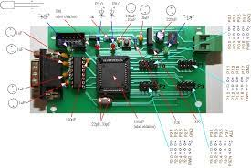

Digitális rendszerek
| Tantárgy feladata és célja:
A villamosmérnöki ismeretekhez a digitális-technikai alapok elsajátítása
Tudás: Ismeri a villamosmérnöki szakterület műveléséhez szükséges általános és specifikus matematikai, természet- és társadalomtudományi elveket, szabályokat, összefüggéseket, eljárásokat. Ismeri a villamosmérnöki szakterület legfontosabb elméleteit, összefüggéseit és ezek terminológiáját.
Képesség: Képes elektronikai alkatrész- és mikroelektronikai ismereteire is alapozva analóg és digitális áramkörök rutinszerű tervezésére és kivitelezésére.
Attitűd: A megszerzett villamosmérnöki ismeretei alkalmazásával törekszik a megfigyelhető jelenségek minél alaposabb megismerésére, törvényszerűségeinek leírására, megmagyarázására. Nyitott és fogékony a szakterületével kapcsolatos új, korszerű és innovatív eljárások, módszerek alkalmazására.
Autonomia és felelősség: Önállóan képes szakterületén átfogó, megalapozó szakmai kérdések értelmezésére. |
|  |
Vissza